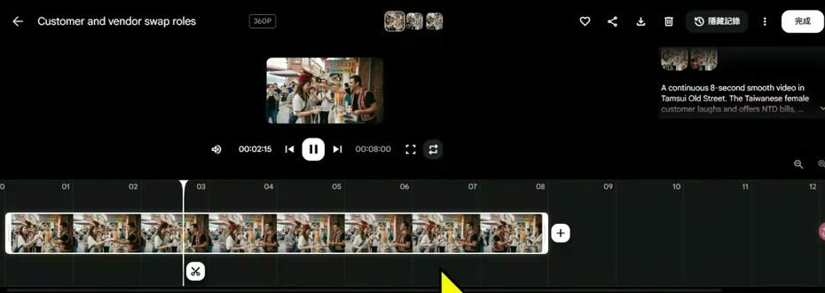
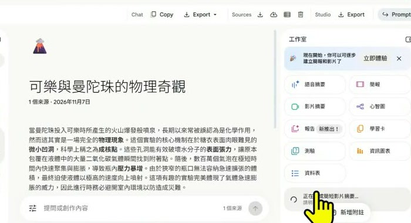

空白頁／過場頁
本頁為空白或視覺過場，沒有可擷取的文字內容。
這份加值版不改寫原正式筆記，而是把簡報頁碼、錄影段落與製作決定放在同一張地圖上。適合先看全貌，再回到原錄影或正式頁定位。
錄影先做工具示範，再回到觀念與流程；簡報頁序則先講控制原理，再展開工具手把手。兩者不是逐頁同步，以下用主題對照。
| 錄影時間 | 主題 | 整合重點 | 簡報對照 |
|---|---|---|---|
| 00:00–13:30 | 先選輸入並鎖住角色 | 用 Vids 示範角色參考、圖生影片、片段延長；先減少模型要猜的身份與構圖。 | 第 3、7、13–18 頁 |
| 13:30–20:30 | 用首尾幀約束一段動作 | 以 Flow 示範起點、終點與中間事件；一鏡只留一個可完成的動作。 | 第 8、15–16、19–20 頁 |
| 20:30–28:30 | 回到時間軸完成成片 | 生成片段只是零件，仍要處理接點、旁白、字幕、配樂與節奏。 | 第 9–10、21–24 頁 |
| 28:30–35:00 | 建立十個控制面向 | 用擴散生成、文生／圖生、連貫性與首尾幀，解釋提示詞以外的控制決定。 | 第 3–8 頁 |
| 35:00–45:30 | 先有故事母版，再轉工具格式 | 故事、分鏡、角色圖、影片提示與 NotebookLM 來源共用同一條敘事主線。 | 第 9–18、23–26 頁 |
| 45:30–52:40 | 按任務選工具並逐項驗收 | 工具名稱不是答案；要檢查年齡、點數、浮水印、授權、事實與輸出比例。 | 第 21–28 頁；第 29–82 頁為教材延伸 |
提示詞只負責其中一部分。能在介面、參考圖、分鏡或時間軸直接指定的條件，不必全部塞進一句文字。
| 控制術 | 實作決定 | 簡報 | 錄影定位 |
|---|---|---|---|
| 01 懂原理 | 模型會逐步形成畫面，單張好看不等於時間上連貫。 | 第 4、6 頁 | 28:30–32:00 |
| 02 選輸入 | 文生用來探索；已有明確人物與構圖時，改用圖生或參考素材。 | 第 7 頁 | 00:00–13:30、32:00–33:30 |
| 03 定起終 | 首尾幀約束兩端，中間提示只描述一個看得見的變化。 | 第 8 頁 | 13:30–20:30 |
| 04 拆零件 | 把劇情、分鏡、畫面、聲音、配樂、字幕、節奏分開製作。 | 第 9–10 頁 | 20:30–28:30、35:00–39:00 |
| 05 寫提示 | 主體、動作、場景、光線、風格、鏡頭都要能在畫面中被觀察。 | 第 11–12 頁 | 35:00–45:30 |
| 06 先圖後影 | 先把角色、場景、器材與構圖定稿，再把點數花在動態生成。 | 第 13–14 頁 | 00:00–13:30、35:00–45:30 |
| 07 接動作 | 首尾差異太大就拆成兩鏡；變臉、位移、跳接各有不同修法。 | 第 15–16 頁 | 13:30–20:30 |
| 08 鎖角色 | 固定身份參考、髮型、服裝與配件；場景、姿勢與景別可以變。 | 第 17–18 頁 | 00:00–13:30、35:00–45:30 |
| 09 控鏡頭 | 景別、運鏡、跟隨、時間效果分開寫，一鏡先試一種拍法。 | 第 19–20 頁 | 13:30–20:30、45:30–48:30 |
| 10 選工具 | 按任務與所需控制能力選工具，送出前再看模式、年齡、費用與權利。 | 第 21–28 頁 | 45:30–52:40 |

最穩定的做法，是把「內容決定」與「工具生成」分成兩層。


| 任務 | 工具類型 | 人工驗收 |
|---|---|---|
| 故事、腳本、分鏡 | 文字模型／筆記工具 | 主題是否一致、旁白是否說得完 |
| 角色圖與起始圖 | 生圖／參考素材 | 臉、手、服裝、器材、構圖 |
| 短片與首尾幀 | 影片生成工具 | 身份、連貫、接觸動作、鏡頭 |
| 剪輯、字幕、聲音 | 時間軸工具 | 字幕字詞、音量、節奏、比例 |

每頁保留頁碼、標題與去識別後的文字摘要。官方網址、QR 連結與可能形成識別碼的長字串不在公開版重現。
本頁為空白或視覺過場，沒有可擷取的文字內容。
AI 影片生成 10 大控制術；用圖片、動作與分鏡；提高影片的可控制性
控制重點；每個面向，都對應一個可以調整的製作決定；01 懂原理：理解生成限制；02 選輸入：文生或圖生；03 定起終：首尾幀概念
01 懂原理；以擴散式生成為例：從雜訊逐步形成畫面；控制重點；「擦掉霧氣」是理解用比喻；模型實際在數值表示中運算；訓練時
本頁為空白或視覺過場，沒有可擷取的文字內容。
01 懂原理；好看的單張畫面，還需要前後一致的動作；控制重點；可控做法：縮短片段，減少同時發生的動作；圖片一致
02 選輸入；先選輸入方式，再決定提示詞的工作；控制重點；文生適合發想；已有明確畫面時，可先選圖生；生成方式
03 定起終；圖片約束兩端，提示詞描述中間如何變化；控制重點；首尾幀能引導過程，仍需檢查中間是否變形或跳接；首幀
04 拆零件；控制重點；七個零件可分開製作，最後在時間軸組合；劇情：觀眾要理解的主軸；分鏡：每一鏡的任務
04 拆零件；示範主題：小蘇打加醋，為什麼會冒泡？；控制重點；這是教學節奏範本；段落可再拆成 5–8 個短鏡頭；段落／秒數
05 寫提示；主體＋動作＋場景＋光線＋風格＋鏡頭；控制重點；文生描述畫面；圖生可把重點放在動作、方向與速度；誰？做什麼？
05 寫提示；控制重點；負面提示詞依模型使用；先用正向描述說清楚期待畫面；模糊描述：幫我拍一段很厲害的科學影片；白袍角色在實驗桌前，緩慢把醋倒入燒杯。
06 先圖後影；把外觀定稿與動作生成，分成兩次決定；控制重點；好的起始圖片，能減少影片反覆修正的成本；01 生成參考圖
06 先圖後影；先處理靜態問題，再花點數產生影片；控制重點；同一角色可換構圖；跨鏡頭仍需沿用一致的身份參考；檢查點
07 接動作；控制重點；字幕、化學名詞與說明圖，留到剪輯階段加入；首幀：量杯停在燒杯上方；尾幀：泡沫接近杯口
07 接動作；跨得太遠的變化，可以拆成兩段；控制重點；首尾差異縮小後，再逐步增加動作幅度；問題
08 鎖角色；控制重點；參考素材能提高一致性，仍需逐鏡比對人物特徵；固定臉型、髮型與年齡設定；固定服裝、配件與色彩
08 鎖角色；把每一鏡的資訊拆成「固定」與「可變」；控制重點；同一個 seed 不等於同一角色；以參考素材與逐鏡檢查為主；固定身份
09 控鏡頭；先選一種拍法，讓生成結果容易檢查；控制重點；特寫是景別；慢動作是時間效果，都和運鏡不同；控制項目
09 控鏡頭；控制重點；一鏡先試一種運鏡；不要同時要求推、拉、搖、繞；主體動作：量杯緩慢傾斜；環境動態：泡沫逐漸上升
10 選工具；先看需要的控制功能，再看模型與方案；控制重點；工具名稱不代表所有模式都支援；送出前檢查功能與扣點；製作任務
10 選工具；最後成片的節奏，通常在時間軸上完成；控制重點；旁白先定稿，再對齊畫面；配樂音量以聽清楚人聲為準；任務
控制重點；影片、聲音、字幕可以分工製作，再回到同一條時間軸；先定主題與一句科學結論；寫旁白，再拆成 5–8 鏡；做角色參考與各鏡起始圖
先指出錯在哪裡，再決定下一次改什麼；控制重點；記下輸入圖、提示詞與參數，才能比較哪個調整有效；看到的問題；優先調整
選一個生活科學現象，先完成一鏡；控制重點；練習重點：你改了什麼？畫面因此發生什麼變化？；01 一句話主題；例如：小蘇打加醋為何冒泡？
一張定稿圖、一個清楚動作、一種鏡頭語言；控制重點；你是導演：決定要表達什麼，也檢查每一個生成結果；控制輸入，也控制製作流程；畫面一致：角色參考與首尾幀
今晚用什麼工具；國際 vs 中國；免費 vs 付費；Vids／CapCut：教室主力；Flow、Gemini：限 18 歲＋年齡驗證
工具總覽｜用任務選工具；不用品牌名氣選，而是看用途、年齡與費用；用途；國際工具；中國工具
先說清楚：Sora 已停止服務；海報說「用 OpenAI」→ 今晚用 ChatGPT 寫腳本；Sora 停止服務；網頁、App：2026/4/26；API：2026/9/24
Google Flow／Veo｜限 18 歲以上；須滿 18 歲＋年齡驗證；每天 50 點（官方說法不一）；手把手（4 步）；1 ［官方連結已省略］ 登入；2「新增專案」→ 設定 →「影片」「影格」
Flow 手把手①｜開一個新專案；先登入、再開專案：一支影片一個專案，素材才不會混在一起；［官方連結已省略］；掃我開官網；先登入
Flow 手把手②｜預設是圖片，先點設定；不是直接送出，而是先確認模式：預設是「圖片」，要改成「影片」；［官方連結已省略］；掃我開官網；② 輸入框寫提示
Flow 手把手③｜切影片、選模型、看點數；先用 Lite 試錯，再升級高品質：送出前一定先看「會使用幾點」；［官方連結已省略］；掃我開官網；④「影片」
Google Vids／Gemini｜學生可用免費選項；Vids 個人帳號免費；Gemini 生影片限 18 歲；Vids 個人帳號；每月 50 點；AI Plus
Vids 手把手①｜找到「製作 AI 影片」；不是從空白開始剪，而是先讓 AI 幫你生第一版；［官方連結已省略］；掃我開官網；個人帳號登入
Vids 手把手②｜在「AI 短片」面板寫提示；先把提示詞寫具體，再送出：六格公式直接套進來；［官方連結已省略］；掃我開官網；② 右側「AI 短片」
Gemini 手把手｜按＋建立影片；先按＋選「建立影片」，再寫提示——滿 18 歲才能用；［官方連結已省略］；掃我開官網；① ＋ →「建立影片」
CapCut／剪映｜生成＋剪輯一站完成；剪輯、自動字幕、AI 影片（Seedance 2.5）；步驟 1；Free AI video maker → Instant AI video；步驟 2
CapCut 手把手①｜從首頁進 AI 影片；先找到 AI 影片入口，再開始做：不是從空白時間軸硬剪；［官方連結已省略］；掃我開官網；① Create new
CapCut 手把手②｜Instant AI video；先選 9:16、再貼腳本：比例一開始就要設對；［官方連結已省略］；掃我開官網；③ Style 選風格
CapCut 手把手③｜Create script 長度太長；不是什麼都丟給 AI，而是先看長度：這裡最短 3 分鐘，比賽只要 30–60 秒；［官方連結已省略］；掃我開官網；① Topic 主題
CapCut 手把手④｜Export 匯出；先檢查字幕和科學名詞，再按 Export 匯出；［官方連結已省略］；掃我開官網；⑦ 右上 Export
HeyGen｜數字人講解；免費每月 3 支（帶浮水印、每支 ≤ 1 分鐘）；功能：數字人講解、對嘴、翻譯；1 登入 → Apps → Single scene；2 VIDEO SCRIPT 貼講稿
HeyGen 手把手①｜首頁：註冊或登入；先用免費方案試，再決定要不要付費；［官方連結已省略］；掃我開官網；① Get started
HeyGen 手把手②｜Apps → Single scene；不是按「Create new video」，而是從 Apps 的 Single scene 進去；［官方連結已省略］；掃我開官網；① Apps 裡的
HeyGen 手把手③｜貼講稿、選頭像與聲音；先貼講稿，再選頭像和聲音，最後才按 Generate；［官方連結已省略］；掃我開官網；① VIDEO SCRIPT
HeyGen 手把手④｜Public Avatars 選頭像；不是上傳同學照片，而是用公開頭像：肖像權最安全；［官方連結已省略］；掃我開官網；① Public Avatars
HeyGen 手把手⑤｜免費版能用什麼；免費版不是什麼都能用：先看清楚哪些是灰色、哪些有鎖；［官方連結已省略］；掃我開官網；① Avatar V／IV
HeyGen 手把手⑥｜聲音庫搜中文；先試聽，再選聲音：口白像不像人，耳朵說了算；［官方連結已省略］；掃我開官網；① HeyGen library
Runway／Pika／Luma｜專業級，免費少；Runway；Gen-4.5、Aleph；內含可靈等模型；新帳號實測 0 點
Runway 手把手①｜首頁：試用或登入；不是一進去就生成，而是先看免費額度剩多少；［官方連結已省略］；掃我開官網；① Try Runway
Runway 手把手②｜登入後：0 點；先看右上角點數：新帳號 0 點，代表免費帳號其實沒辦法生成；［官方連結已省略］；掃我開官網；① 0 credits
Runway 手把手③｜Tool → Video → 寫提示；先選 Video 和 Reference，再寫提示：Enhance prompt 可以幫你潤飾；［官方連結已省略］；掃我開官網；① Video
Runway 手把手④｜Keyframe 首尾幀、9:16；先放首幀和尾幀，再改 9:16：比例不改，預設就是橫的；［官方連結已省略］；掃我開官網；① Keyframe
Runway 手把手⑤｜每支 150 點，按鈕變 Upgrade；不是按鈕壞掉，而是點數不夠：Generate 會直接變成 Upgrade；［官方連結已省略］；掃我開官網；① 模型 Seedance 2.5
Pika 手把手｜首頁：價格與試用；先看價格與免費額度，再開始創作；pika.art；掃我開官網；① Pricing 價格
Luma 手把手｜首頁：免費試用；先免費試用，再決定要不要付費；［官方連結已省略］；掃我開官網；① Try for free
可加音樂、對嘴、旁白；隱私：設成「Only me」；Animate 步驟【介面待核】：未開放就跳過；Meta AI Vibes｜照片動起來；1 生成或
Meta AI 手把手｜先登入再寫提示；先登入試試看；顯示未開放，就換別的工具；［官方連結已省略］；掃我開官網；① Log in 登入
可靈 Kling｜首尾幀、對嘴強；國際版；［官方連結已省略］：Google／Apple／Email；登入，台灣有；App
可靈手把手①｜從 Try Now 開始；先點 Try Now，下一步就會請你登入；［官方連結已省略］；掃我開官網；① 點 Try Now
可靈手把手②｜這裡要登入；跳出登入框不是壞掉，而是先登入才看得到生成畫面；［官方連結已省略］；掃我開官網；② 這裡要登入
可靈手把手③｜登入後：66 點與四顆按鈕；先看點數：66 點，一支 50 點——免費大約只夠做 1 支；［官方連結已省略］；掃我開官網；① 66 點
可靈手把手④｜Keyframes 首尾幀；先改成 Keyframes，再放首幀和尾幀；［官方連結已省略］；掃我開官網；① 模式改選
可靈手把手⑤｜模型選 Kling 4.0；先用預設的 Kling 4.0，灰色的選不了就別硬點；［官方連結已省略］；掃我開官網；① Kling 4.0
可靈手把手⑥｜720p、5 s、9:16 → 50 點；先改 9:16，再看按鈕上的點數：一次 50 點；［官方連結已省略］；掃我開官網；① 720p
即夢 Dreamina／Seedance；繁中官網，單次最長 30 秒；免費；每天 120 點；付費
即夢手把手；①｜；登入有；種方式；先登入；Google 不行就換 email——老師實測 Google 登入失敗
即夢手把手②｜寫提示、選比例；先選 9:16、再選模型，最後才送出；［官方連結已省略］；掃我開官網；① 寫提示
即夢手把手③｜打開模型選單；先用便宜的模型試錯，滿意再升級；［官方連結已省略］；掃我開官網；⑤ 模型選單
即夢手把手④｜Download 下載；先下載、再匯入 CapCut 剪接收尾；［官方連結已省略］；掃我開官網；⑥ 點 Download
海螺、Vidu、萬相｜各自特色；海螺 Hailuo；MiniMax H3；可選 Veo 3.1；贈點 3 天過期
海螺手把手①｜看懂定價卡；不是看到折扣就買，而是先切月繳／年繳看清楚；hailuoai.video；掃我開官網；① Monthly 月繳
海螺手把手②｜生成畫面；先寫提示或上傳圖，再按 Create；hailuoai.video；掃我開官網；① Create Video
Vidu 手把手①｜月繳方案；先看每月點數，再看價格：點數才是你能做幾支的關鍵；［官方連結已省略］；掃我開官網；① Monthly Billing
Vidu 手把手②｜年繳比較便宜；年繳比較便宜，但先用免費額度試過再說；［官方連結已省略］；掃我開官網；① Yearly 18% OFF
萬相手把手①｜月繳方案；先看每月點數，再看價格；wan.video；掃我開官網；① Pro $6.5
萬相手把手②｜年繳折合每月；年繳比較便宜，但今晚只介紹、不實作；wan.video；掃我開官網；④ Pro 年繳 $5
價格比較表｜入門月費一覽；價格常變動，以官方頁為準（查證 2026/11/2）；工具；免費；入門付費
使用守則；帳號隱私、浮水印、標示 AI、肖像權；01 帳號隱私：中國工具要手機號，先用國際版；02 浮水印：免費版多帶浮水印、不可商用；03 標示 AI：作品註明「AI 生成」
AI 翻唱與歌曲｜著作權×肖像權；用別人的歌、別人的聲音，都要先有授權；不要做；拿流行歌給 AI 翻唱再上傳；模仿歌手的聲音或長相
休息 10 分鐘｜同時登入工具帳號；19:30–19:40：休息，也把帳號準備好；必備；Google 帳號；剪輯